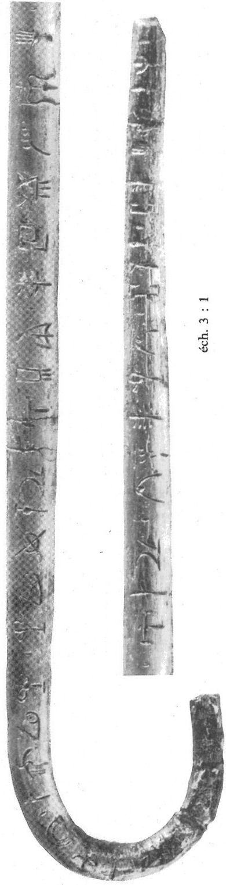
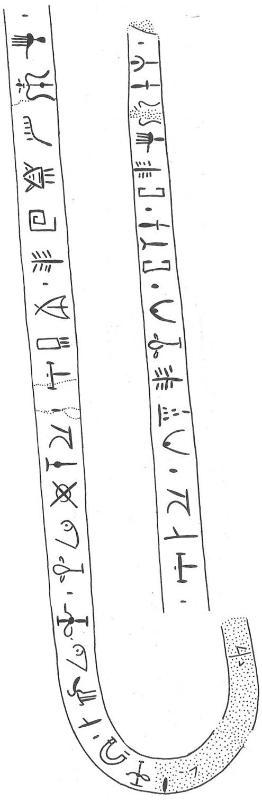

-
KNZf31
Names
Aliases for the inscription.
KNZf31, KN Zf 31
Support
Type of Object.
Metal object
Location
Site where object was found.
Knossos
Findspot
Location at Site.
Unavailable


# "Row Index", "Line Index", "Word Index", "Syllabogram", "Status of Reading"
# R L W I S
# 1 0 1 PA certain
1 1 0 SI none
2 1 0 SI none
3 1 0 ZA none
4 1 0 NE none
5 1 0 *310 none
5 1 1 *900 none
6 1 2 DA none
7 1 2 DU none
7 1 2 MI none
7 1 2 NE none
7 1 3 *900 none
7 1 4 QA none
7 1 4 MI none
7 1 4 *47 none
7 1 4 NA none
7 1 4 RA none
7 1 5 *900 none
7 1 6 A none
8 1 6 WA none
8 1 6 PI none
8 1 7 *900 none
8 1 8 TE none
9 1 8 SU none
10 1 8 DE none
10 1 8 SE none
10 1 8 KE none
11 1 8 I none
11 1 9 *900 none
11 1 10 A none
11 1 10 DA none
12 1 10 RA none
12 1 11 *900 none
12 1 12 TI none
13 1 12 DI none
14 1 12 TE none
14 1 12 QA none
14 1 12 TI none
14 1 13 *900 none
14 1 14 TA none
14 1 14 SA none
14 1 14 ZA none
14 1 15 *900 none
14 1 16 TA none
14 1 16 TE none
14 1 16 I none
14 1 16 KE none
14 1 16 ZA none
14 1 16 RE none
14 1 17 *900 none
Scribe
Writer of Inscription.
Unavailable
Context
Approximate Date of Inscription.
Unavailable
Dimensions
Height x Length x Thickness.
Catalogue
Museum Reference Number.
Readings
Linear A Transcription
A Linear A transcription with words parsed separately.
Line breaks match the inscription.
𐘤
𐘤
𐘍
𐘗
𐙠𐄁
𐘀
𐘬𐘻𐘗𐄁𐘌𐘻𐘨𐘅𐘴𐄁𐘇
𐘮𐘢𐄁𐘃
𐘲
𐘦𐘈𐘥
𐘚𐄁𐘇𐘀
𐘴𐄁𐘠
𐘆
𐘃𐘌𐘠𐄁𐘳𐘞𐘍𐄁𐘳𐘃𐘚𐘥𐘍𐘙𐄁
ASCII Transcription
An ASCII transcription with words parsed separately.
Line breaks match the inscription.
SI
SI
ZA
NE
*310*900
DA
DUMINE*900QAMI*47NARA*900A
WAPI*900TE
SU
DESEKE
I*900ADA
RA*900TI
DI
TEQATI*900TASAZA*900TATEIKEZARE*900
Linear A Tabulation
A Linear A transcription with words parsed separately.
Line breaks are logical, e.g. to represent a list.
𐘤𐘤𐘍𐘗𐙠𐄁𐘀𐘬𐘻𐘗𐄁𐘌𐘻𐘨𐘅𐘴𐄁𐘇𐘮𐘢𐄁𐘃𐘲𐘦𐘈𐘥𐘚𐄁𐘇𐘀𐘴𐄁𐘠𐘆𐘃𐘌𐘠𐄁𐘳𐘞𐘍𐄁𐘳𐘃𐘚𐘥𐘍𐘙𐄁
ASCII Tabulation
An ASCII transcription with words parsed separately.
Line breaks are logical, e.g. to represent a list.
SISIZANE*310*900DADUMINE*900QAMI*47NARA*900AWAPI*900TESUDESEKEI*900ADARA*900TIDITEQATI*900TASAZA*900TATEIKEZARE*900
Commentary
KN Zf 31
(HM 540) (GORILA IV:
154-155, 162; Alexiou-Brice 1972; Forsdyke 1926-7), silver pin
(Mavrospelio Tb IX.B2, LM
IA stylistic date); the reverse of the pin carries a row of crocus
blossoms (cf. CR(?) Zf 1) -- these are illustrated by Forsdyke 1926-7 fig.
38 and by Alexiou-Brice 1972 pl. 2.
]SI[ ]
SI
-
ZA
-NE-*310 •
DA-
DU
-MI-NE
• QA-MI-*47-NA-RA • A-WA-PI •
TE-SU-DE-
SE
-KE-I
•
A-DA-RA • TI-DI-TE-QA-TI •
TA-SA-ZA •
TA-TE-I-
KE
-ZA-RE •[
for DA-
DU
-MI-NE, DA-
KU
-MI-NE
is not
excluded.
Commentary © John Younger
References
papers/GORILA-Vol4.pdf#page=196